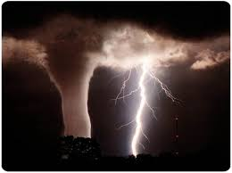

HAARP, une arme de destruction massive
Ces installations utilisent des techniques radioélectriques visant à comprendre les lois régissant l’ionosphère. Un objectif par exemple est d’étudier l’impact de cette ionosphère sur les communications haute distance, ce qui pourrait s’avérer un avantage tactique lors de conflits. Cependant, il semblerait que les capacité du projet HAARP à influencer l’ionosphère serait beaucoup plus importante que ce que les informations officielles admettent. Notamment, en contrôlant l’ionosphère on pourrait aisément contrôler certains aspects du climat. On pourrait par exemple créer des catastrophes naturelles localisées telles que des ouragans, tremblements de terre, tornades, etc... Nous allons nous interésser aux différentes fonctionnalitées du projet HAARP.
Contrôle de la météo
 Le projet HAARP permet de contrôler et de modifier la météo dans une zone donnée. Cela est possible grâce aux antennes qui envoie des ondes radios dans l'ionosphère ce qui a pour conséquence de modifier la météo et la température. Cette capacité sous le contrôle des États-Unis permettent un avantage stratégique pour le pays que ce soit pendant des guerres ou encore pour avoir un avantage sur les autres pays en terme d'économie, après tous les États-Unis ne sont ils pas la première puissance mondiale ?
Bien entendu, les États-Unis contredisent ces propos, pire encore ils font partie de la convention ENMOD de 1977 qui est une convention qui interdit les modifications de la biosphère à des fins hostiles. En 1998, le Comité des affaires étrangères, de la sécurité et de la politique de défense du parlement européen en 1999 une motion stipulant que "HAARP... en vertu de son impact étendu sur l'environnement , constitue une préoccupation mondiale... [le comité] demande que ses implications légales, écologiques et éthiques soient évalués par un organisme international indépendant... [le comité] regrette le refus réitéré des États-Unis d'apporter des preuves à l'audience publique concernant les risques pour l'environnement et le public du programme HAARP". Cependant, cette demande n'a pas pu être accepté sous le prétexte que la Commision Européenne ne disposait pas de la juridiction nécessaire. Cela prouve que le projet HAARP n'est pas juste une fausse info ou une théorie extravagante mais belle et bien quelque chose de sérieux. De plus, le fait que cette requete est été refusée est intrigant, Bruxelle aurait il eu peur d'entrer en conflit avec les États-Unis
Il y a beaucoup d'exemples d'utilisation du contrôle de la météo, consulter la page "METEO" pour en voir plus.
Contrôle des systèmes de communication
Selon beaucoup de scientifique (Zielinsky, Richard William), le projet HAARP permet et a été utilisé afin de modifier les systèmes de communication. Durant des périodes de guerre notamment la guerre froide, les États-Unis ont perturber les systèmes de communication de URSS afin d'avoir un avantage stratègique sur leur adversaire. Encore une fois, ces informations ne sont pas approuvées par les États-Unis
HAARP est aussi capable de perturber les systèmes électriques en perturbant le champ électromagnétique. Grace à cela, ils sont capables de détruire en vol les missiles, fusées, avions et satellites, cette technologie offre aux États-Unis un bouclier antimissile pour les USA.
Un bon nombre de personne comme vous et moi, vivent en Alaska, proche de la base de recherche HAARP, témoignent d'inexplicable coupure de courant ou d'internet, est-ce une coïncidence, ou belle et bien une preuve que quelque chose d'étrange se passe.
Si vous voulez voir les utilisations faitent par les État-Unis, consultez la page "COMMUNICATION".
Contrôle de la pensée
 Ce n'est pas tout, le projet HAARP permet aussi de contrôler la pensée et l'esprit des gens. En effet les armes EMP (et à plus forte raison, HAARP) ont un effet psychologique perturbant sur l'être humain. En 1952 le professeur Jose Delgado de l'université de Yale a découvert que les ondes ELF (ultra basse fréquence) sont capables d'interférer avec les fréquences cérébrales et d'altérer les émotions.
Ce n'est pas tout, le projet HAARP permet aussi de contrôler la pensée et l'esprit des gens. En effet les armes EMP (et à plus forte raison, HAARP) ont un effet psychologique perturbant sur l'être humain. En 1952 le professeur Jose Delgado de l'université de Yale a découvert que les ondes ELF (ultra basse fréquence) sont capables d'interférer avec les fréquences cérébrales et d'altérer les émotions.
Le texte suivant est extrait d'une revue interne du pentagone : "The revolution in military affairs - strategic studies institute, US army War college", il a de quoi faire frémir : "Nos valeurs changent et la technologie s'ouvre sûr de nouveaux horizons. Il y a peu, pendant la guerre froide, les opérations psychologiques et l'armement psychologique étaient encore primitifs.
Alors que nous entrons de plein pied dans l'ère de l'électronique et de la bioélectronique, il devient nécessaire d'évaluer les barrières morales et éthiques que nous avons posées en interdisant [toute technologie] pouvant manipuler l'esprit de nos ennemis tant à l'intérieur du pays qu'à un niveau international...
Dès que ce sera possible, nous encouragerons des entreprises privées ou semi-privées à développer une technologie appropriée... Nous pouvons agir de même avec les nouveaux types d'armement comme les armes biologiques incapacitantes et les armes psychotechnologiques avancées...".
Ici on ne parle pas du projet HAARP, cependant il est important de noter les véritables intentions des États-Unis, de plus on sait que les États-unis ont déjà dans le passé menait des expériences sur le contrôle mental sous divers noms de code : Argus (1968), Solar power sattelite (1968-1978), Space Shuttle experiments (1985), Mighty Oaks (1986), Desert Storm (1991).
Pour rentrer plus en détail dans les différentes utilisations de HAARP dans le contrôle psychique, consulter la page "PENSEE" pour en voir plus.